Cooking classes in Turin and around
Cooking classes, fresh pasta, bread, pastry and world cuisine courses in Turin, Cuneo and around.
Search all workshops86 activities coming up · updated on 9 November 2026
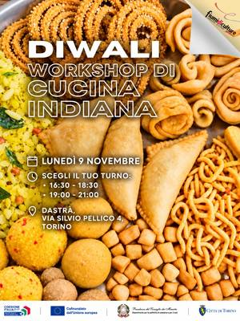
mon9novCookingDiwali: Indian cooking workshopMonday 9 November, 16:30–18:30San Salvario (TO) · Freewith Vaishali Raokhande at Fiumi di Culture mon9novCookingPizza workshop: pizza and spritzMonday 9 November, 18:00–19:30Lingotto (TO) · 50 € · sold outwith Eataly Torino Lingotto
mon9novCookingPizza workshop: pizza and spritzMonday 9 November, 18:00–19:30Lingotto (TO) · 50 € · sold outwith Eataly Torino Lingotto- tue10novCookingPastry lesson: sauces and creamsTuesday 10 November, 17:30–20:30Lingotto (TO) · 80 €with Eataly Torino Lingotto
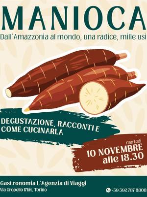
tue10novCookingCassava: workshop and tastingTuesday 10 November, 18:30Cit Turin (TO) · 25 €with Gastronomia L’Agenzia di Viaggi- tue10novCookingOde to Piedmont: Piedmontese cuisineTuesday 10 November, 19:30–22:30Centro (TO) · 75 €with STUDIOFOOD33
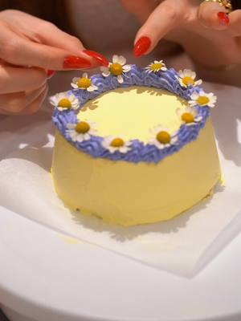
thu12novCookingCake & Chill: decorate your own cakeThursday 12 November, 19:00–21:00Centro (TO)with Limaco’s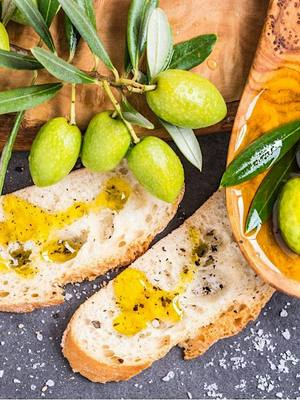
fri13novCookingNo-cook menu: olive oil specialFriday 13 November, 17:30–20:30Lingotto (TO) · 70 € · sold outwith Eataly Torino Lingotto with Slow Food- fri13novCookingCake Club: a vintage cake by candlelightFriday 13 November, 19:00–21:00Centro (TO) · 40 €with Limaco’s with Voilà
 sat14novCookingCake Painting: decorate and paint a cakeSaturday 14 NovemberCentro (TO) · 50 €with Aperi Pods
sat14novCookingCake Painting: decorate and paint a cakeSaturday 14 NovemberCentro (TO) · 50 €with Aperi Pods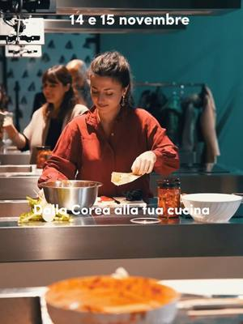
sat14novCookingKorean cooking masterclass: recipes and ingredientsfrom Saturday 14 November to Sunday 15 NovemberAurora (TO)with Mercato Centrale Torino with Kimchi & Basilico sat14novCookingBento cake workshop: icing and letteringSaturday 14 November, 15:00–17:00San Salvario (TO) · 35 €with Giuppi Pasticceria
sat14novCookingBento cake workshop: icing and letteringSaturday 14 November, 15:00–17:00San Salvario (TO) · 35 €with Giuppi Pasticceria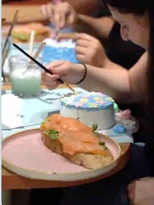
sat14novCookingPaint Your Cake: a hand-painted cakeSaturday 14 November, 18:00–20:00Centro (TO)with Limaco’s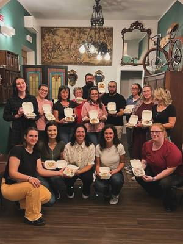
sun15novCookingApericake: decorate a mini cakeSunday 15 November, 17:30Rivoli (TO)with Claudia Cakes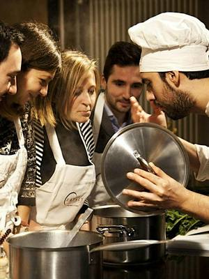
mon16novCookingAphrodisiac menu: couples’ cookingMonday 16 November, 17:30–20:30Lingotto (TO) · 160 €with Eataly Torino Lingotto with Slow Food- mon16novCookingCooking class: pizza and Ligurian focacciaMonday 16 November, 19:30–22:30Centro (TO) · 85 €with STUDIOFOOD33
 tue17novCookingPastry lesson: savoury bitesTuesday 17 November, 17:30–20:30Lingotto (TO) · 90 €with Eataly Torino Lingotto
tue17novCookingPastry lesson: savoury bitesTuesday 17 November, 17:30–20:30Lingotto (TO) · 90 €with Eataly Torino Lingotto- wed18novCookingFrench cooking: a night at the brasserieWednesday 18 November, 17:30–20:30Lingotto (TO) · 80 €with Eataly Torino Lingotto with lo chef Clovis Jourdain
- wed18novCookingCooking class: Japanese noodlesWednesday 18 November, 19:30–22:30Centro (TO) · 85 €with STUDIOFOOD33
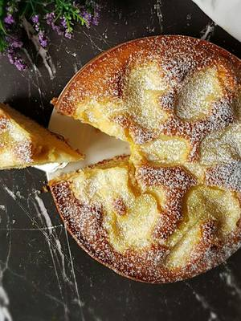
fri20novCookingPastry lesson: everyday cakesFriday 20 November, 17:30–20:30Lingotto (TO) · 70 € · sold outwith Eataly Torino Lingotto- sat21novCookingCooking class: a full Chinese menuSaturday 21 November, 09:30–12:30Lingotto (TO) · 80 € · sold outwith Eataly Torino Lingotto with Slow Food
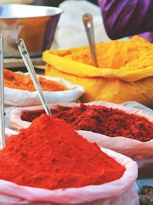
sat21novCookingWorld cuisines: gluten-free IndianSaturday 21 November, 14:30–17:30Lingotto (TO) · 80 €with Eataly Torino Lingotto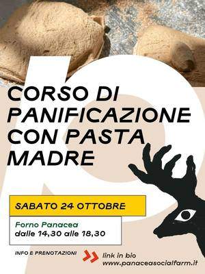
sat21novCookingSourdough bread: a baking courseSaturday 21 November, 14:30–18:30San Donato (TO) · 50 €with Panacea Social Farm- sat21novCookingCake & Chill: decorate your own cakeSaturday 21 November, 19:00–21:00Turinwith Limaco’s
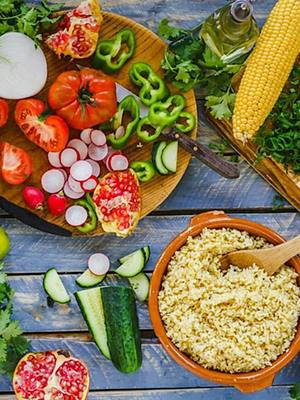
sun22novCookingAutumn fusion veg: plant-based cookingSunday 22 November, 09:30–12:30Lingotto (TO) · 75 € · sold outwith Eataly Torino Lingotto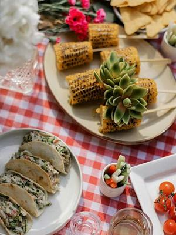
sun22novCookingHappy vegan finger food: veggie nibblesSunday 22 November, 14:30–17:30Lingotto (TO) · 75 €with Eataly Torino Lingotto with Caterina Mosca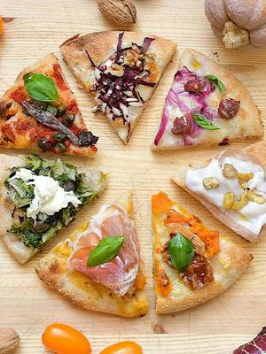
mon23novCookingPizza workshop: pizza and G&TMonday 23 November, 18:00–19:30Lingotto (TO) · 50 € · sold outwith Eataly Torino Lingotto- mon23novCookingCooking class: Mexican aperitivoMonday 23 November, 19:30–22:30Centro (TO) · 85 €with STUDIOFOOD33
 tue24novCookingRamen workshop: all about ramenTuesday 24 November, 17:30–19:30Lingotto (TO) · 65 €with Eataly Torino Lingotto
tue24novCookingRamen workshop: all about ramenTuesday 24 November, 17:30–19:30Lingotto (TO) · 65 €with Eataly Torino Lingotto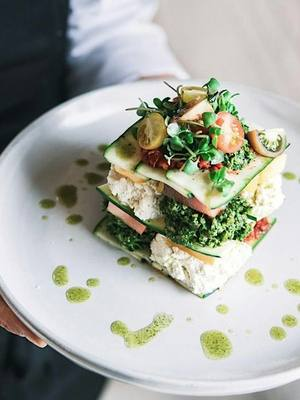
thu26novCookingFestive plant-based cooking: veg menuThursday 26 November, 17:30–20:30Lingotto (TO) · 75 € · sold outwith Eataly Torino Lingotto with Slow Food- thu26novCookingPaint Your Cake: a hand-painted cakeThursday 26 November, 19:00–21:00Centro (TO)with Limaco’s
 thu26novCookingCooking class: autumn bentoThursday 26 November, 19:30–22:30Centro (TO) · 85 €with STUDIOFOOD33 with Tabete Market
thu26novCookingCooking class: autumn bentoThursday 26 November, 19:30–22:30Centro (TO) · 85 €with STUDIOFOOD33 with Tabete Market sun29novCookingAsian finger food: couples’ cookingSunday 29 November, 09:30–12:30Lingotto (TO) · 160 € · sold outwith Eataly Torino Lingotto
sun29novCookingAsian finger food: couples’ cookingSunday 29 November, 09:30–12:30Lingotto (TO) · 160 € · sold outwith Eataly Torino Lingotto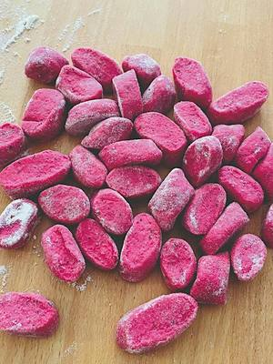
sun29novCookingCooking class: gnocchiSunday 29 November, 14:30–16:30Lingotto (TO) · 65 €with Eataly Torino Lingotto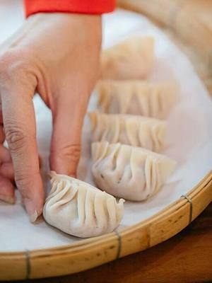
mon30novCookingGyoza workshop: gyoza and beerMonday 30 November, 17:30–19:30Lingotto (TO) · 65 € · sold outwith Eataly Torino Lingotto with Chiara Lazzarin- mon30novCookingCooking class: French cuisineMonday 30 November, 19:30–22:30Centro (TO) · 85 €with STUDIOFOOD33 with lo chef Patrik Lisa
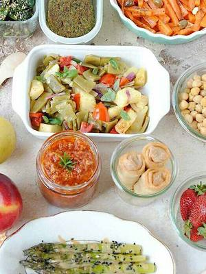
tue1decCookingGlobal batch cooking: cook once, eat all weekTuesday 1 December, 17:30–20:30Lingotto (TO) · 80 €with Eataly Torino Lingotto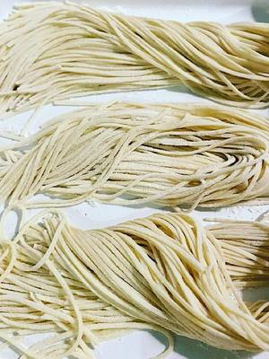
wed2decCookingWorld cuisines: noodlesWednesday 2 December, 17:30–20:30Lingotto (TO) · 80 € · sold outwith Eataly Torino Lingotto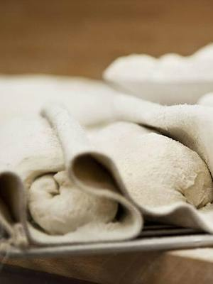
thu3decCookingHomemade bread: flours and doughsThursday 3 December, 17:30–20:30Lingotto (TO) · 75 €with Eataly Torino Lingotto with Slow Food fri4decCookingChristmas special: edible giftsFriday 4 December, 17:30–20:30Lingotto (TO) · 70 €with Eataly Torino Lingotto with Chiara Lazzarin
fri4decCookingChristmas special: edible giftsFriday 4 December, 17:30–20:30Lingotto (TO) · 70 €with Eataly Torino Lingotto with Chiara Lazzarin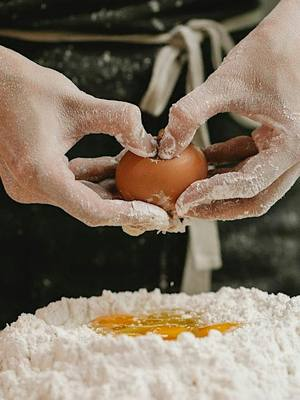
from5decCookingFresh pasta ABC: beginners’ coursefrom Saturday 5 December, 09:30–12:30Lingotto (TO) · 250 € · sold outwith Eataly Torino Lingotto- sat5decCookingSweet decorations: Christmas biscuitsSaturday 5 December, 10:30–12:30Crocetta (TO) · 25 €with Aula44
- sat5decCookingPizza Lovers: pizza for twoSaturday 5 December, 14:30–17:30Lingotto (TO) · 160 €with Eataly Torino Lingotto
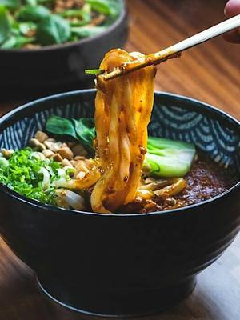
mon7decCookingRamen workshop: all about ramenMonday 7 December, 17:30–19:30Lingotto (TO) · 65 € · sold outwith Eataly Torino Lingotto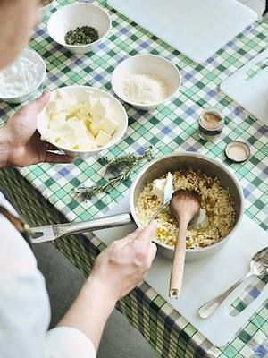
wed9decCookingCooking class: risottoWednesday 9 December, 17:30–20:30Lingotto (TO) · 80 €with Eataly Torino Lingotto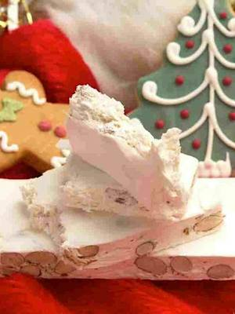
thu10decCookingThe Christmas hamper: edible giftsThursday 10 December, 17:30–20:30Lingotto (TO) · 80 €with Eataly Torino Lingotto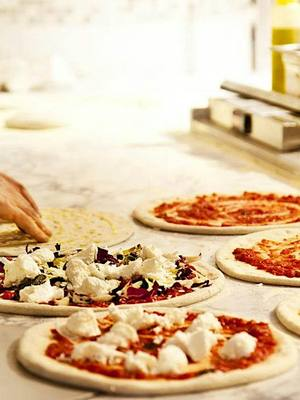
fri11decCookingCooking class: homemade pizzaFriday 11 December, 17:30–20:30Lingotto (TO) · 75 €with Eataly Torino Lingotto with Slow Food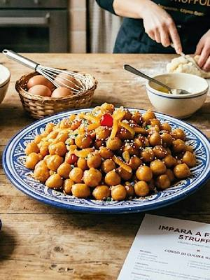
fri11decCookingCooking class: struffoliFriday 11 December, 17:30–20:30Lingotto (TO) · 70 €with Eataly Torino Lingotto- sat12decCookingPastry lesson: Christmas cakeSaturday 12 December, 14:30–17:30Lingotto (TO) · 90 €with Eataly Torino Lingotto
 sat12decCookingSourdough bread: a baking courseSaturday 12 December, 14:30–18:30Barriera di Milano (TO) · 50 €with Panacea Social Farm
sat12decCookingSourdough bread: a baking courseSaturday 12 December, 14:30–18:30Barriera di Milano (TO) · 50 €with Panacea Social Farm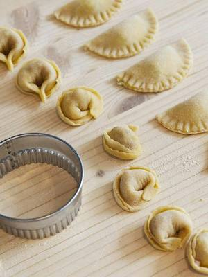
sun13decCookingChristmas fresh pasta: doughs and fillingsSunday 13 December, 14:30–17:30Lingotto (TO) · 70 € · sold outwith Eataly Torino Lingotto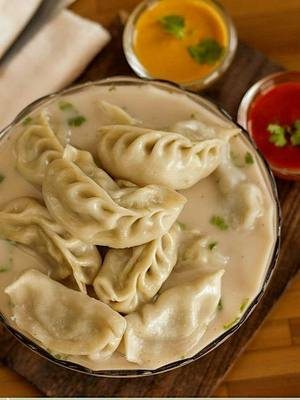
mon14decCookingGyoza workshop: veggie gyoza and beerMonday 14 December, 17:30–19:30Lingotto (TO) · 65 € · sold outwith Eataly Torino Lingotto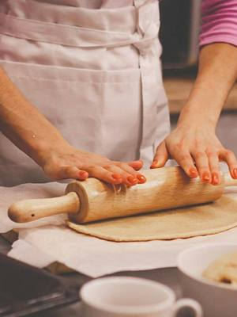
tue15decCookingFestive savoury nibbles: crackers and grissiniTuesday 15 December, 17:30–20:30Lingotto (TO) · 80 €with Eataly Torino Lingotto- thu17decCookingPastry lesson: tea biscuitsThursday 17 December, 17:30–20:30Lingotto (TO) · 90 €with Eataly Torino Lingotto
- fri18decCookingChristmas fresh pasta: couples’ classFriday 18 December, 17:30–20:30Lingotto (TO) · 160 € · sold outwith Eataly Torino Lingotto
 sat19decCookingBread-making ABC: festive breadsSaturday 19 December, 14:30–16:30Lingotto (TO) · 120 €with Eataly Torino Lingotto
sat19decCookingBread-making ABC: festive breadsSaturday 19 December, 14:30–16:30Lingotto (TO) · 120 €with Eataly Torino Lingotto mon21decCookingPizza workshop: pizza and G&TMonday 21 December, 18:00–19:30Lingotto (TO) · 50 €with Eataly Torino Lingotto
mon21decCookingPizza workshop: pizza and G&TMonday 21 December, 18:00–19:30Lingotto (TO) · 50 €with Eataly Torino Lingotto from9janCookingCooking ABC: beginners’ coursefrom Saturday 9 January, 09:30–12:30Lingotto (TO) · 250 €with Eataly Torino Lingotto
from9janCookingCooking ABC: beginners’ coursefrom Saturday 9 January, 09:30–12:30Lingotto (TO) · 250 €with Eataly Torino Lingotto- tue12janCookingCooking class: plin, brasato and bunetTuesday 12 January, 19:30–23:30Centro (TO) · 85 €with STUDIOFOOD33
- wed13janCookingCooking class: Japanese noodlesWednesday 13 January, 19:30–22:30Centro (TO) · 85 €with STUDIOFOOD33
- mon18janCookingCooking class: pan pizza and farinataMonday 18 January, 19:30–23:30Centro (TO) · 75 €with STUDIOFOOD33
- tue19janCookingCooking class: Roman cuisineTuesday 19 January, 19:30–22:30Centro (TO) · 85 €with STUDIOFOOD33
- wed20janCookingCooking class: sushi and bubblyWednesday 20 January, 19:30–22:30Centro (TO) · 85 €with STUDIOFOOD33
- thu21janCookingCooking class: ramenThursday 21 January, 19:30–22:30Centro (TO) · 85 €with STUDIOFOOD33 with Tabete Market
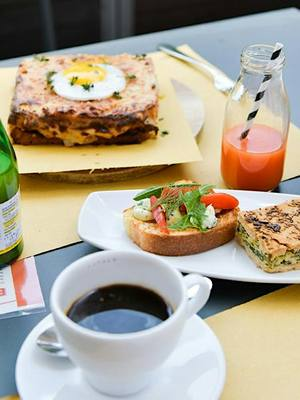
sun24janCookingSuper vegan brunch: plant-based brunchSunday 24 January, 09:30–12:30Lingotto (TO) · 80 €with Eataly Torino Lingotto sun24janCookingTasty detox: cleansing cookingSunday 24 January, 14:30–17:30Lingotto (TO) · 80 €with Eataly Torino Lingotto with Caterina Mosca
sun24janCookingTasty detox: cleansing cookingSunday 24 January, 14:30–17:30Lingotto (TO) · 80 €with Eataly Torino Lingotto with Caterina Mosca- mon25janCookingCooking class: vegetarian MexicanMonday 25 January, 19:30–22:30Centro (TO) · 85 €with STUDIOFOOD33
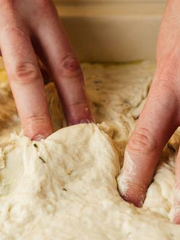
tue26janCookingCooking class: pizza and Ligurian focacciaTuesday 26 January, 19:30–22:30Centro (TO) · 85 €with STUDIOFOOD33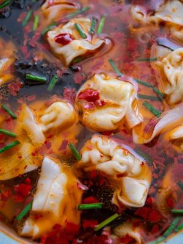
wed27janCookingCooking class: Sichuan cuisineWednesday 27 January, 19:30–22:30Centro (TO) · 85 €with STUDIOFOOD33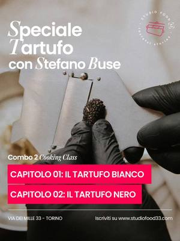
fri29janCookingCooking class: black truffleFriday 29 January, 20:00–23:00Centro (TO) · 150 €with STUDIOFOOD33 with lo chef Patrik Lisa- tue2febCookingCooking class: tagliatelle and vitello tonnatoTuesday 2 February, 19:30–22:30Centro (TO) · 75 €with STUDIOFOOD33 with La Bottega di Mastro Taricco
- wed10febCookingCooking class: gyoza and Japanese beerWednesday 10 February, 19:30–22:30Centro (TO) · 85 €with STUDIOFOOD33
- sun14febCookingLove is in the kitchen: Valentine’s dinnerSunday 14 February, 20:00–23:00Centro (TO) · 130 €with STUDIOFOOD33
- wed17febCookingCooking class: ramen and Japanese beerWednesday 17 February, 19:30–22:30Centro (TO) · 75 €with STUDIOFOOD33
 sat20febCookingSecretly vegan: social cookingSaturday 20 February, 14:30–17:30Lingotto (TO) · 70 €with Eataly Torino Lingotto
sat20febCookingSecretly vegan: social cookingSaturday 20 February, 14:30–17:30Lingotto (TO) · 70 €with Eataly Torino Lingotto- tue23febCookingCooking class: battuta, risotto and bonetTuesday 23 February, 19:30–22:30Centro (TO) · 75 €with STUDIOFOOD33
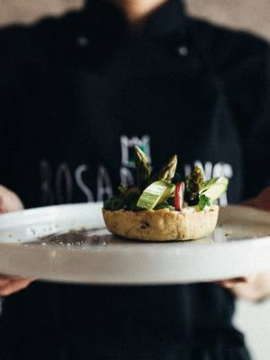
from26febCookingCooking class: the plant worldfrom Friday 26 February to Saturday 3 April, 19:30Centro (TO) · 130 € for 2 eveningswith STUDIOFOOD33 with le chef di RosaRegina dateof your choiceCookingCesarine: pasta class in a local homeDate of your choiceTurin · from 129 €with Cesarine
dateof your choiceCookingCesarine: pasta class in a local homeDate of your choiceTurin · from 129 €with Cesarine dateof your choiceCookingChoco-Story: chocolate workshopDate of your choiceSan Salvario (TO) · from 39 €with Choco-Story Torino
dateof your choiceCookingChoco-Story: chocolate workshopDate of your choiceSan Salvario (TO) · from 39 €with Choco-Story Torino dateof your choiceCookingCooking class: fresh pasta and tiramisùDate of your choiceSan Salvario (TO) · 75 €with Cook & Walk
dateof your choiceCookingCooking class: fresh pasta and tiramisùDate of your choiceSan Salvario (TO) · 75 €with Cook & Walk dateof your choiceCookingCooking class: pasta, pizza and tiramisùDate of your choiceVanchiglia (TO) · from 65 €with Forchette a sinistra
dateof your choiceCookingCooking class: pasta, pizza and tiramisùDate of your choiceVanchiglia (TO) · from 65 €with Forchette a sinistra- everymonCookingCooking lessons: with the chefEvery MondayTurin · 60 € per lessonwith Edoardo Cipollaro at Kreative Club
 dateof your choiceCookingHappiness Factory: Leone chocolateDate of your choiceCollegno (TO) · 35 €with Leone 1857
dateof your choiceCookingHappiness Factory: Leone chocolateDate of your choiceCollegno (TO) · 35 €with Leone 1857- dateto be confirmedCookingA Taste of the World: plant-based cookingDate to be confirmedTurin · 50 €with Masala Studio
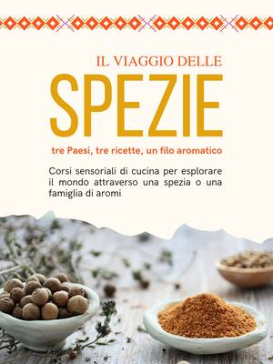
dateto be confirmedCookingThe Spice Journey: plant-based recipesDate to be confirmedTurin · 50 €with Masala Studio dateof your choiceCookingFresh pasta at the winery: tagliatelleDate of your choiceVillarbasse (TO) · from 108 €with Vignaiole Prever
dateof your choiceCookingFresh pasta at the winery: tagliatelleDate of your choiceVillarbasse (TO) · from 108 €with Vignaiole Prever dateof your choiceCookingCake design course: sugar pasteDate of your choiceCentro (TO)with Maria Cocciolo at Polo Le Rosine
dateof your choiceCookingCake design course: sugar pasteDate of your choiceCentro (TO)with Maria Cocciolo at Polo Le Rosine